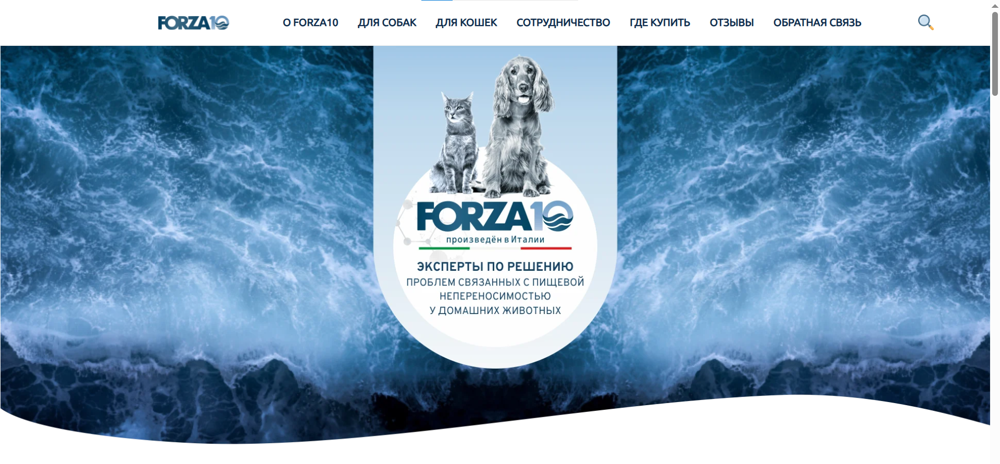

Forza10 — интернет-каталог
Коммерческий сайт с нуля для бренда ветеринарных кормов. Без макета — от референсов и словесного ТЗ.
Подробнее о кейсе
Развернул и настроил 1С-Битрикс, спроектировал структуру шаблона в /local/templates/forza10. Реализовал адаптивную вёрстку, каталог, умный поиск, мобильное бургер-меню. Проект собран без дизайн-макета — от референсов и живых правок заказчика.